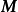
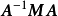
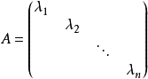

设M为元素取自交换体K中的n阶方阵，将M对角化，就是确定一个对角矩阵D及一个可逆方阵P，使M=PDP-1。设f为典范对应于M的Kn的自同态，将M对角化，就是确定Kn的一个基，使在该基中对应f的矩阵是对角矩阵。
- 中文名
- 对角化
- 外文名
- Diagonalize
- 所属学科
- 数学
- 特 点
- 只有主对角线上含有非零元素
- 相关概念
- 方阵，对角矩阵等
对角化基本介绍
编辑对角矩阵是指只有主对角线上含有非零元素的矩阵，即，已知一个n×n矩阵
，则该矩阵为对角矩阵。如果存在一个矩阵
，使
将矩阵
对角化。对于一个矩阵来说，不一定存在将其对角化的矩阵，但是任意一个n×n矩阵如果存在n个线性不相关的特征向量，则该矩阵可被对角化
[1]
。

，如果对于

的结果为对角矩阵，则称矩阵对角化相关定理
编辑定理1 令
为n×n矩阵，其特征值为
 ，特征向量为
，特征向量为
 ，形成线性无关集合，以每个特征向量为列构成矩阵
，如下所示。
，形成线性无关集合，以每个特征向量为列构成矩阵
，如下所示。
矩阵
可以将矩阵
对角化，乘积矩阵
的主对角元素是矩阵
的特征值：
证明：首先计算矩阵乘积
 。由于矩阵
的第j列对应特征向量
，则
的第j列等于
。由于
为特征向量，则
，矩阵乘积
可写为
。由于矩阵
的第j列对应特征向量
，则
的第j列等于
。由于
为特征向量，则
，矩阵乘积
可写为

反之，也可证明，可将矩阵
对角化的可逆矩阵
必定由
的特征向量组成。假设
为n×n对角矩阵，且
，其中
为n×n矩阵，有
令AD的第j列等于MA的第j列，则
，因此
是与特征值
对应的矩阵M的特征向量。 证毕。
对角化对角矩阵
编辑对角化定义
（1）对角矩阵形如：

（2）对角矩阵可以记作：
。
（3）当
时，对角阵
称为数量矩阵。
对角化运算规律
和差运算
同阶对角阵的和、差仍是对角阵，有：
数乘运算
数与对角阵的乘积仍为对角阵，有：
乘积运算
同阶对角矩阵的乘积仍为对角阵，且它们的乘积是可交换的，有：
对角化矩阵相似于对角矩阵的条件
充要条件
n阶矩阵A相似于对角矩阵的充要条件是A有n个线性无关的特征向量。
证明过程：
（1）必要性。
设有可逆矩阵P，使得
令矩阵P的n个列向量为
，则有
（2）充分性。
由必要性的证明可见，如果矩阵A有n个线性无关的特征向量，设它们为
，对应的特征值分别为
，则有
，以这些向量为列构造矩阵
，则P可逆，且
，其中C如下：
即
。
推论
若n阶矩阵A有n个不同的特征值，则A必能相似于对角矩阵。
词条标签：
科普中国
致力于权威的科学传播
本词条认证专家为
V百科往期回顾


- 词条统计
-
- 浏览次数：72248次
- 编辑次数：17次历史版本
- 最近更新：2018-01-14
- 创建者：daijing216